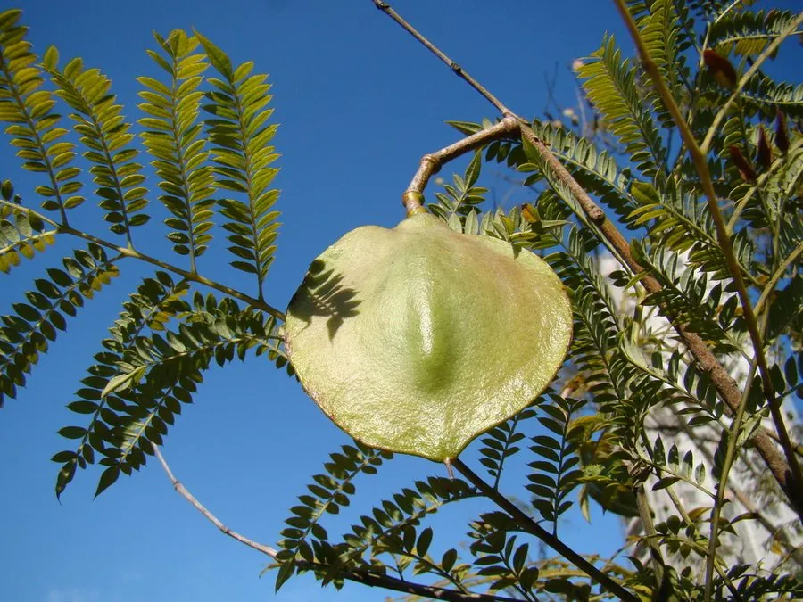

乔木 · 植物界
蓝花楹 Jacaranda mimosifolia

原产南美的落叶乔木，初夏满树蓝紫色钟形花朵，落花铺地如毯，是热带与亚热带城市著名的观花行道树。
- 分类
- 门被子植物门纲木兰纲目唇形目科紫葳科属蓝花楹属
- 栖息环境
- 热带亚热带地区的平原与丘陵，喜温暖湿润和充足光照，不耐寒
- 地理分布
- 原产南美巴西、阿根廷、玻利维亚等地；中国广东、福建、云南等地广泛栽培
- 保护级别
- 暂无评估；中国未列入国家重点保护野生植物名录
物种志
蓝花楹为落叶乔木，高可达 15 m，树冠开展，树皮灰褐色；叶片为二回羽状复叶，小叶细小，呈蕨类状，排列轻盈。花期春末夏初，圆锥花序顶生，花冠钟形、蓝紫色，长 4–5 cm，成片开放时满树蓝紫，落花铺满地面如紫色地毯。果实为木质蒴果，扁平圆形，成熟时褐色并开裂，种子带薄翅，可随风传播。
蓝花楹原产南美洲巴西、阿根廷、玻利维亚等地，喜温暖湿润、光照充足的环境，不耐寒，适宜深厚肥沃、排水良好的沙壤土。因其花色独特、花期集中，被广泛引种到澳大利亚、南非及中国南方城市作为行道树与庭园树，花期常成为当地重要的旅游景观；澳大利亚布里斯班、南非比勒陀利亚均以蓝花楹闻名。木材轻软，可用于家具与工艺品，树形优美，是园林中的名贵观花树种。
形态与习性
- 株高可达 15 m，树冠开展
- 花期4–6 月，花冠蓝紫色
- 果期9–10 月，木质蒴果扁平
- 光照喜光，不耐荫
- 水分喜湿润，忌积水
- 土壤深厚肥沃、排水良好的沙壤土
- 主要用途观花行道树、庭园树、木材制器具
趣味知识
- 蓝花楹的花冠呈钟形、蓝紫色，成片开放时整条街道像笼罩在蓝紫色雾中。
- 蓝花楹的叶子是二回羽状复叶，小叶细小如羽毛，风过时轻轻摇动。
- 南非比勒陀利亚与澳大利亚布里斯班都以蓝花楹花期闻名，被称为“蓝花楹之城”。
- 蓝花楹的果实是扁圆形的木质蒴果，成熟后开裂散出带翅种子。